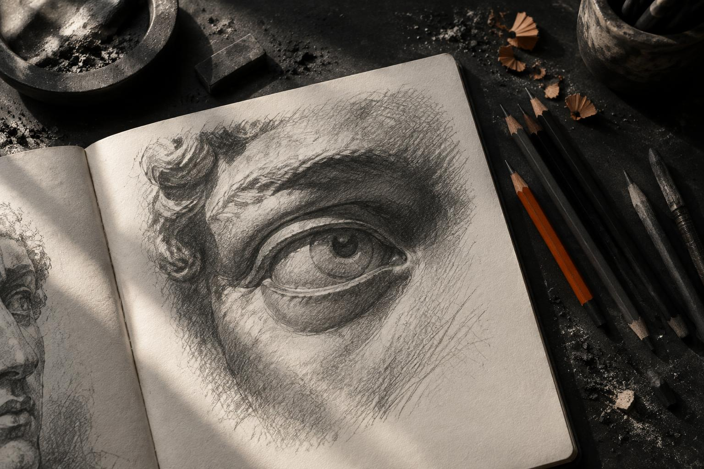

Sketching
Turning observations into lines, shapes, and stories on paper.

A LITTLE INTRODUCTION
A curious mind.
A creative spirit.
I find expression in sketches, inspiration in books,
and connection in conversations.
01 / WHAT MAKES ME, ME
Different interests. One curious mind.Turning observations into lines, shapes, and stories on paper.
Discovering new perspectives, one page at a time.
Listening with intention and connecting through conversation.
02 / ALWAYS MOVING FORWARD
From the sketchbook to the race track, I bring curiosity and commitment to what I do. This is just the beginning of my story.
Get to know meIn race competitions.
A little reminder to keep going.
GOOD CONVERSATIONS START SOMEWHERE